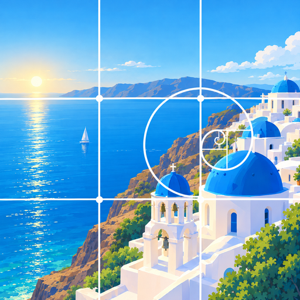

KOZU 構図カメラ| カメラCamera | 構図のアドバイスのため、映像を端末の中・メモリ上で解析します（主役の検出・切り抜き・形の判定・追跡、画面の明るさの分布）。映像を保存したり、外部に送ったりしません。顔の位置を検出することがありますが、誰であるかの識別は行いません。 To give composition tips, video is analyzed in memory on your device (finding, cutting out, shape analysis, and tracking of the subject, plus the brightness layout of the scene). Video is never stored or sent. The app may detect where faces are, but never identifies anyone. |
|---|---|
| 写真ライブラリ（追加）Photo library (add) | 撮影した写真を保存するために使います。背景ぼかしは端末の中で処理してから保存します。 Used to save the photos you take. Background blur is applied on-device before saving. |
| 写真ライブラリ（読み取り）Photo library (read) | 再生モードで、写真がどの構図に当てはまるかを端末の中で解析して表示するために使います。解析の結果（写真の識別子と構図の名前）は、次回すぐ表示できるよう端末の中のファイルに保存します。写真そのものをアプリにコピーしたり、外部に送ったりしません。 Used in Playback to analyze on your device which composition each photo matches. The results (the photo's identifier and the composition name) are kept in a file on your device so they show up quickly next time. Photos themselves are never copied into the app or sent anywhere. |
| このアプリで撮った写真の記録Record of photos taken with the app | 「このアプリで撮影」の一覧を出すため、写真の識別子だけを端末の中に保存します。 To list "Taken with this app", only photo identifiers are stored on your device. |
| モーションセンサーMotion sensors | 水準器と、縦位置・横位置の判定に使います。保存しません。 Used for the level and to tell portrait from landscape. Not stored. |
| 設定Settings | 構図・テーマカラー・f値などの設定は、端末の中に保存します。 Settings such as composition, theme color, and f-number are stored on your device. |
本アプリは情報を外部に送信しないため、第三者に提供することはありません。広告や解析のための外部サービス（SDK）も組み込んでいません。 Because the app sends nothing off your device, nothing is shared with third parties. The app contains no third-party SDKs for ads or analytics.
カメラや写真へのアクセスは、iPhone の「設定」→「KOZU 構図カメラ」からいつでも変更できます。本アプリを削除すると、端末の中に保存した設定と解析結果もすべて削除されます。撮影した写真は写真ライブラリに残ります。 You can change camera and photo access at any time in iPhone Settings → KOZU. Deleting the app removes all settings and analysis results stored on your device. Photos you took remain in your photo library.
本アプリは個人情報を収集しないため、お子さまの情報を収集することもありません。 The app collects no personal data, including from children.
本ポリシーを変更する場合は、このページでお知らせします。 Any changes to this policy will be posted on this page.
Hideto Akiyoshi — hideto0926@gmail.com